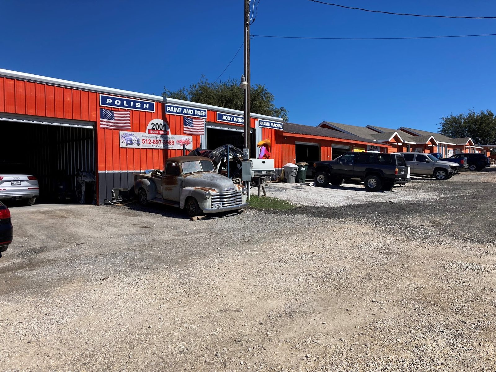

Body repair
Dents, creases and crash damage on cars, trucks and SUVs, the work on the sign as Body Work.
- Dent and panel repair
- Collision damage
- Cars, trucks and SUVs

Auto body shop · FM 2001, Buda, TX
Paint, bumpers and body repair at the orange shop on FM 2001. Washed car on pickup.
Inventory


4.9Google rating
152Google reviews
Mon–Fri8 AM to 5 PM
How we help
Body repair, bumpers, paint and prep, frame work and polish.
Dents, creases and crash damage on cars, trucks and SUVs, the work on the sign as Body Work.
Cracked, damaged or ripped-off bumpers repaired, with quick turnaround.
Paint repair and repaints, including hoods, at fair prices.
Paint and Prep is lettered across the front of the shop. Ask how your panel will be prepped before it is painted.
The sign out front lists a frame machine. Ask about frame work on your vehicle.
Polish is the first word on the sign. Ask about polishing for your car or truck.
How a repair goes
Tell the shop what happened, in English or Spanish.
Javier explains the work and keeps you posted as it goes.
Your car comes back looking new, and washed.
4.9 · 152 Google reviews
This place is amazing I can’t say enough not only about the quality, customer service, and their promptness. They have done my paint and they recently fixed my back bumper after it got ripped off (included before and after pictures). Both occasions they were more than AMAZING it took 2 days for both jobs, they made my car look brand new as if nothing happened, they also washed it, and they are reasonably priced.
Javier and his team did an amazing job on my vehicle in a very timely manner. I’d recommend him to anybody needing body repairs. Will be sending over friends and family. 🙏 Javier was very communicative with the progress of work being completed which in my opinion is very important given the fact that times are hard without a vehicle listed below is pictures of before and after Thanks to the 2001 Bodyshop team for…
Javier did a fantastic job repainting the hood of my Tacoma at an outstanding price. He’s friendly, knowledgeable, and I highly recommend visiting him if you’re looking for paint repair services.
This is hands down the best body shop I have ever been to! From start to finish, the service was absolutely incredible and incredibly fast. The people who work here are so sweet, welcoming, and genuinely nice they made the whole process completely stress-free. If you want fast, high-quality work and a team that treats you right, look no further. I can’t recommend them enough!

About the lot
An orange metal building with a wall of paint inside and a gravel lot out front. Polish, Paint and Prep, Body Work and Frame Machine, all on the sign.
Javier and his team keep you updated as the work moves along. Fair prices, quick turnaround, and the car comes back washed.
The shop is bilingual. Habla español.